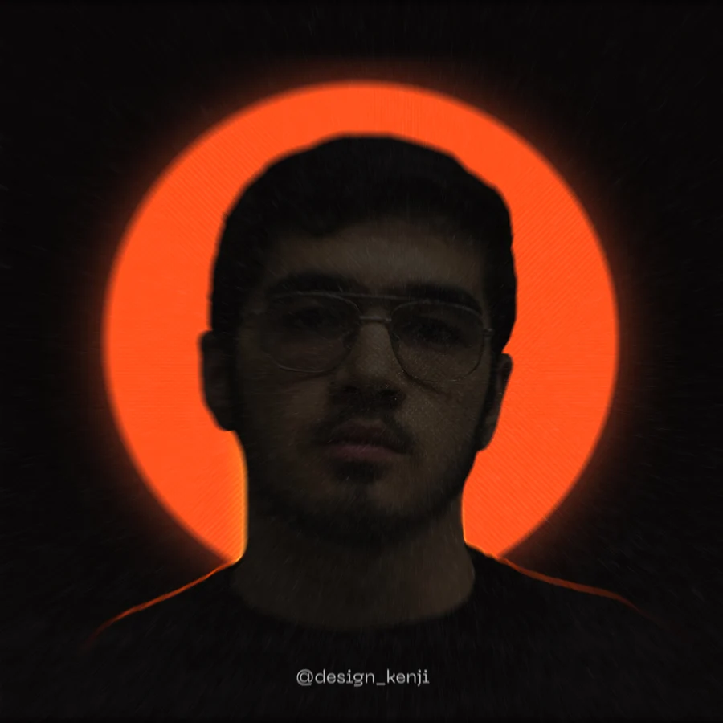

Сильная идея.
Точный знак.
Ваш характер.
Я Абдусамад. Создаю логотипы и визуальные системы, которые помогают бизнесу говорить на своём языке.
Смотретьработы↓
и веб-дизайне
Дизайн, который
говорит за вас.
Здесь говорят работы.
Визуальные кейсы появятся после добавления исходных материалов портфолио.
Raffles Homes · AUTOSHOP KOREA · Davaz · Fineline · Eco Mebel · NGX · Nur Invest · Raffles Diamond

Абдусамад / Графический & веб-дизайнерСильный бренд
начинается с ясности.
Я Абдусамад, графический и веб-дизайнер с опытом более 5 лет. Работаю с формой, типографикой и цифровой средой — от первого знака до целостного образа бренда.
Для меня дизайн — это способ сделать характер бизнеса видимым. Найти точную идею, убрать лишнее и превратить её в узнаваемый визуальный язык.
От знака —
до системы.
01Логотип
↗
Точка узнавания вашего бренда. Выразительный знак и типографика, в которых есть идея и характер.
Знак · Логотип · Варианты применения02Айдентика
↗
Единый визуальный язык для всех точек контакта: цвет, шрифт, графика и композиция.
Палитра · Типографика · Носители03Брендинг
↗
Визуальный образ, который связывает идею бизнеса, его характер и коммуникацию.
Концепция · Визуальная система · Правила использования04Веб-дизайн
↗
Цифровое продолжение бренда. Понятная структура, выразительная композиция и внимание к мобильному опыту.
Лендинги · Сайты · Адаптивные интерфейсыРазные рынки.
Один язык —
дизайн.
Опыт работы с брендами и проектами на международных рынках.
- Дубай ОАЭ
- Южная Корея KR
- Узбекистан UZ
- Малайзия MY
- Россия RU
- Саудовская Аравия SA
Давайте создадим
ваш логотип.
Расскажите о бизнесе и задаче.
Начнём с того, что действительно важно.